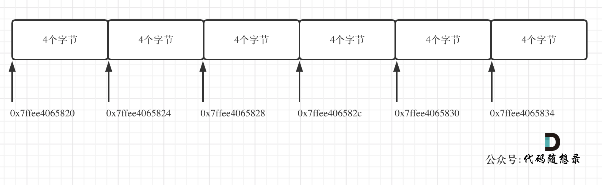

leetcode-数组
leetcode 中数组相关的题型
数组理论基础
数组是存放在连续内存空间上的相同类型数据的集合。

- 数组下标都是从0开始的。
- 数组内存空间的地址是连续的
因为数组的在内存空间的地址是连续的，所以我们在删除或者增添元素的时候，就难免要移动其他元素的地址。

数组的元素是不能删的，只能覆盖。
二维数组结构

那么二维数组在内存的空间地址是连续的么？
不同编程语言的内存管理是不一样的，以C++为例，在C++中二维数组是连续分布的。
我们来做一个实验，C++测试代码如下：
1 | void test_arr() { |
测试地址为
0x7ffee4065820 0x7ffee4065824 0x7ffee4065828 0x7ffee406582c 0x7ffee4065830 0x7ffee4065834 注意地址为16进制，可以看出二维数组地址是连续一条线的。
0x7ffee4065820 与 0x7ffee4065824 差了一个4，就是4个字节，因为这是一个int型的数组，所以两个相邻数组元素地址差4个字节。
0x7ffee4065828 与 0x7ffee406582c 也是差了4个字节，在16进制里8 + 4 = c，c就是12。

Java是没有指针的，同时也不对程序员暴露其元素的地址，寻址操作完全交给虚拟机。
所以看不到每个元素的地址情况，这里我以Java为例，也做一个实验。
1 | public static void test_arr() { |
输出的地址为：
[I@7852e922
[I@4e25154f
[I@70dea4e
[I@5c647e05
这里的数值也是16进制，这不是真正的地址，而是经过处理过后的数值了，我们也可以看出，二维数组的每一行头结点的地址是没有规则的，更谈不上连续。

二分查找
给定一个 n 个元素有序的（升序）整型数组 nums 和一个目标值 target，写一个函数搜索 nums 中的 target，如果目标值存在返回下标，否则返回 -1。
1 | 示例 1: |
1 | 示例 2: |
提示：
- 你可以假设 nums 中的所有元素是不重复的。
- n 将在 [1, 10000]之间。
- nums 的每个元素都将在 [-9999, 9999]之间。
思路
二分法前提条件
- 有序数组
- 数组中无重复元素
循环不变量规则: 在while寻找中每一次边界的处理都要坚持根据区间的定义来操作。
左闭右闭即[left, right]
- while (left <= right) 要使用 <= ，因为left == right是有意义的，所以使用 <=
- if (nums[middle] > target) right 要赋值为 middle - 1，因为当前这个nums[middle]一定不是target，那么接下来要查找的左区间结束下标位置就是 middle - 1
例如在数组：1, 2, 3, 4, 7, 9, 10中查找元素2，如图所示：

1 | function search(nums: number[], target: number): number { |
左闭右开即[left, right)
- while (left < right)，这里使用 < , 因为left == right在区间[left, right)是没有意义的
- if (nums[middle] > target) right 更新为 middle，因为当前nums[middle]不等于target，去左区间继续寻找，而寻找区间是左闭右开区间，所以right更新为middle，即：下一个查询区间不会去比较nums[middle]
1 | function search(nums: number[], target: number): number { |
相关题目推荐
34. 在排序数组中查找元素的第一个和最后一个位置
35. 搜索插入位置
69. x 的平方根
367. 有效的完全平方数
移除元素
给你一个数组 nums 和一个值 val，你需要 原地 移除所有数值等于 val 的元素，并返回移除后数组的新长度。不要使用额外的数组空间，你必须仅使用 O(1) 额外空间并 原地 修改输入数组。元素的顺序可以改变。你不需要考虑数组中超出新长度后面的元素。
1 | 示例 1: |
1 | 示例 2: |
思路
要知道数组的元素在内存地址中是连续的，不能单独删除数组中的某个元素，只能覆盖。
暴力解法
这个题目暴力的解法就是两层for循环，一个for循环遍历数组元素 ，第二个for循环更新数组。

1 | function removeElement(nums:number[], val:number):number{ |
- 时间复杂度：O(n^2)
- 空间复杂度：O(1)
双指针法
通过一个快指针和慢指针在一个for循环下完成两个for循环的工作。
- 快指针：寻找新数组的元素 ，新数组就是不含有目标元素的数组
- 慢指针：指向更新 新数组下标的位置

1 | function removeElement(nums: number[], val: number): number { |
- 时间复杂度：O(n)
- 空间复杂度：O(1)
相关题目推荐
26. 删除有序数组中的重复项
283. 移动零
844. 比较含退格的字符串
977. 有序数组的平方
长度最小的子数组
给定一个含有 n 个正整数的数组和一个正整数 s ，找出该数组中满足其和 ≥ s 的长度最小的 连续 子数组，并返回其长度。如果不存在符合条件的子数组，返回 0。
1 | 示例： |
思路
暴力解法
两个for循环，然后不断的寻找符合条件的子序列。
1 | function minSubArrayLen(target: number, nums: number[]): number { |
时间复杂度：O(n^2) 空间复杂度：O(1)
滑动窗口
不断的调节子序列的起始位置和终止位置，从而得出我们要想的结果。
首先要思考 如果用一个 for 循环，那么应该表示 滑动窗口的起始位置，还是终止位置。
如果只用一个 for 循环来表示 滑动窗口的起始位置，那么如何遍历剩下的终止位置？
此时难免再次陷入 暴力解法的怪圈。
所以 只用一个 for 循环，那么这个循环的索引，一定是表示滑动窗口的终止位置。
那么问题来了，滑动窗口的起始位置如何移动呢？
这里还是以题目中的示例来举例，s=7， 数组是 2，3，1，2，4，3，来看一下查找的过程：

在本题中实现滑动窗口，主要确定如下三点：
- 窗口定义：满足其和 ≥ s 的长度最小的 连续 子数组。
- 窗口的起始位置如何移动：如果当前窗口的值大于s了，窗口就要向前移动了（也就是该缩小了）。
- 窗口的结束位置如何移动：窗口的结束位置就是遍历数组的指针，也就是for循环里的索引。

滑动窗口的精妙之处在于根据当前子序列和大小的情况，不断调节子序列的起始位置。
1 | function minSubArrayLen(target: number, nums: number[]): number { |
时间复杂度：O(n) 空间复杂度：O(1)
相关题目推荐
螺旋矩阵 II
给你一个正整数 n ，生成一个包含 1 到 n2 所有元素，且元素按顺时针顺序螺旋排列的 n x n 正方形矩阵 matrix 。

1 | 示例 1： |
1 | 示例 2： |
解题思路
模拟顺时针画矩阵的过程:
- 填充上行从左到右
- 填充右列从上到下
- 填充下行从右到左
- 填充左列从下到上 由外向内一圈一圈这么画下去，每画一条边都要坚持一致的左闭右开，或者左开右闭的原则。
左闭右开的原则画法：

这里每一种颜色，代表一条边，每一个拐角处让给新的一条边来继续画。
1 | function generateMatrix(n: number): number[][] { |
相关题目推荐
总结
参考
数组理论基础
二分查找
移除元素
长度最小的子数组
螺旋矩阵II
数组总结篇
本文作者：雪糕
本文地址： https://blooddot.cool/posts/b702bc87/
版权声明：转载请注明出处！